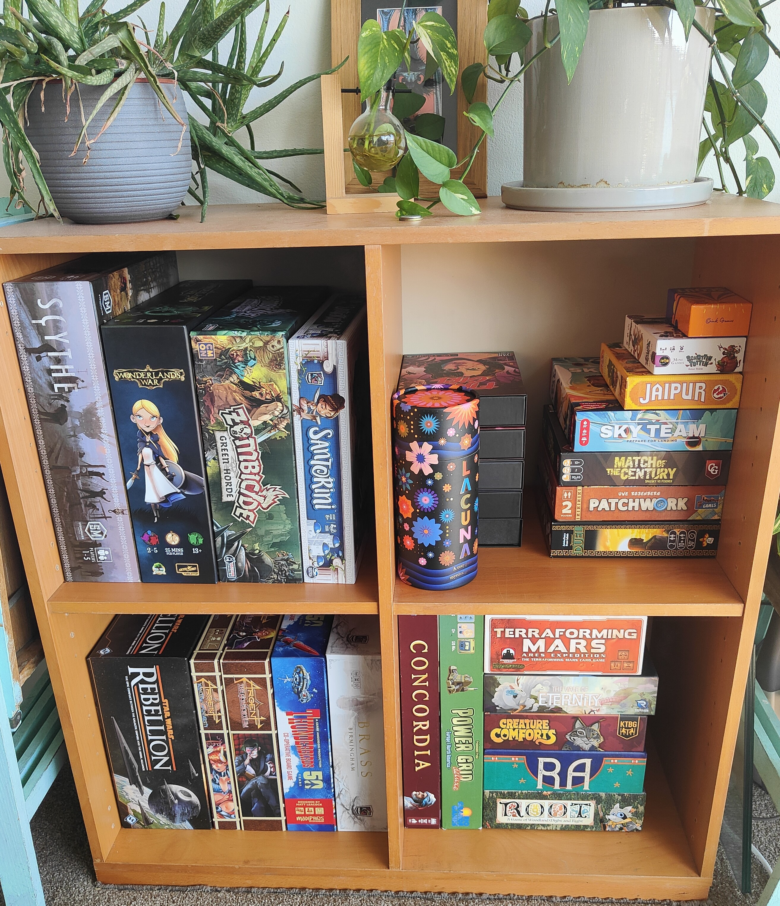
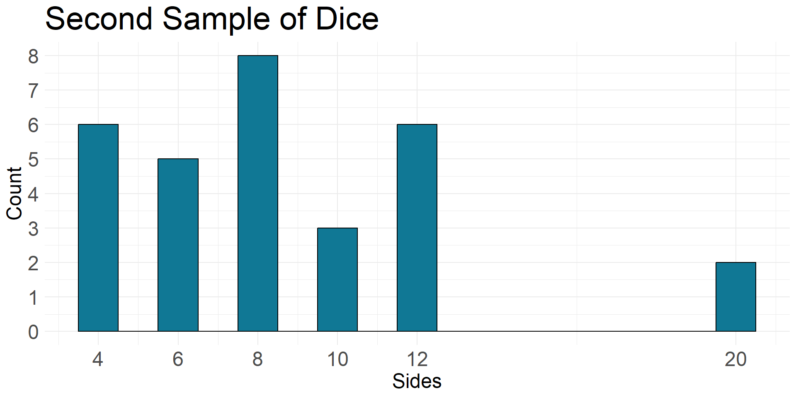

Confidence Interval of the Mean
How to be confident about your uncertainty
![]()
May 23, 2024
An Initial Guess (Point Estimation)
Lecture Attendance
At the beginning of semester, I guessed that the average lecture attendance would be \(105.2\) students. (Data collected from Weeks 1 to 7)
- This was my best guess, but I was uncertain about it.
- I have a few tricks up my sleeve to help me be more confident about my estimate.
A Better Guess (Interval Estimation)
Lecture Attendance
I collected data from previous semesters and use this information to improve my estimate.
The smallest average attendance was \(81.1\) students.
The largest average attendance was \(118.9\) students.
So, to improve my estimate, I can say that the average lecture attendance will probably be between \(81.1\) and \(118.9\) students.
Actual Data
I have been collecting data on lecture attendance for the first seven weeks of semester. The average attendance was \(95.2\) students.
Outline
Confidence Intervals
If we are estimating a population parameter \(\mu\), we can use a confidence interval to express our uncertainty about the estimate.
We can write this confidence interval as
\[ \operatorname{CI} = \Big(L(X),U(X)\Big) \]
where \(L(X)\) is the lower bound and \(U(X)\) is the upper bound.
Using our data
Since \(L(X)\) and \(U(X)\) are a function of the random sample \(X\), we will use our data to calculate this interval.
Desirable Properties
Confidence Intervals
- The confidence interval contains the true population parameter with a specified probability.
- The interval is the shortest possible for a specified probability.
Counting Dice Example
Confidence Intervals

In tabletop games, dice are used to generate random numbers.
I have a collection of dice with different numbers of sides. The sides of the dice are \(4\), \(6\), \(8\), \(10\), \(12\), and \(20\).
Example
Confidence Intervals
After purchasing many different dice, I have a bag of \(n=100\) dice.
Central Limit Theorem
Confidence Intervals
We have already learnt about the Central Limit Theorem (CLT) and some of its very useful properties. We now take a larger sample of size \(n=30\).
Code
n2 <- 30
sample2_dice <- sample(dice, n2, replace = TRUE)
mean2_dice <- mean(sample2_dice)
ggplot(data = data.frame(x = sample2_dice), aes(x = x)) +
geom_histogram(binwidth = 1,
fill = "#107895",
color = "black") +
labs(title = "Second Sample of Dice", x = "Sides", y = "Count") + scale_x_continuous(breaks = sides) + scale_y_continuous(breaks = seq(0, 10, 1)) + theme_minimal() +
theme(
axis.text = element_text(size = 18),
axis.title = element_text(size = 18),
title = element_text(size = 24)
)
From our new sample:
\(\bar{x} = 8.67\), and
\(s = 4.15\).
Confidence Intervals
Confidence Intervals
We can combine the sample mean and the standard error to create a confidence interval. In the instance, I am interested in creating a \(95\%\) confidence interval.
A \(95\%\) confidence interval for the population mean \(\mu_{sides}\) is given by
\[ CI = ( 7.18 , 10.15 ) \]
Actual Count
Confidence Intervals
| Dice | Count |
|---|---|
| 4 | 19 |
| 6 | 12 |
| 8 | 19 |
| 10 | 17 |
| 12 | 21 |
| 20 | 12 |
Let’s see how we did. The table shows the number of each type of dice in the dice bag.
We can see that the population mean is \(\mu_{\text{sides}} = 9.62\).
How confident are we?
Confidence Intervals
The confidence level of the interval is the probability that the interval contains the true population parameter.
\[ P(L(X) \leqslant \mu \leqslant U(X)) = 1 - \alpha \]
where \(\alpha\) (usually \(0.05\)) is the significance level. We can also think about this as
\[ P(\mu < L(X)) + P(\mu > U(X)) = \alpha \]
Checking our Confidence interval
Confidence Intervals
Interactive
Confidence Intervals
textinfo = md`
Out of a total of ${nrep} samples, ${d3.sum(data.map(d => d.rep <= nrep && (mu >= d.lower && mu <= d.upper)))} (**<span style="color:red">${(d3.sum(data.map(d => d.rep <= nrep && (mu >= d.lower && mu <= d.upper)))*100/nrep).toFixed(3)}%</span>**) of the ${confidence}% confidence intervals contained the true population mean ${tex`\mu= `} ${mu}.
`
viewof nrep = Scrubber(d3.ticks(1, 1000, 1000), {
autoplay: false,
loop: false,
initial: 1,
delay: 500,
format: x => `Number of repeats = ${x.toFixed(0)}`
})
plt = Plot.plot({
style: {fontSize: "12px"},
width: 960,
y: {
label: "Mean",
domain: lockvertical ? [mu- 3, mu + 3] : [mu - 5*sigma/Math.sqrt(nobs),mu + 5*sigma/Math.sqrt(nobs)]
},
x: {
label: "Sample Number",
domain: [0, nrep]
},
marks: [
Plot.ruleX([0]),
Plot.ruleX(data, {
filter: d => (d.rep <= nrep && mu >= d.lower && mu <= d.upper),
x: "rep",
y1: "lower",
y2: "upper",
stroke: "#107895",
strokeWidth: 1.5
}),
Plot.dot(data, {filter: d => (d.rep <= nrep && mu >= d.lower && mu <= d.upper), x: "rep", y: "xbar", fill: "#107895", r: 3}),
Plot.ruleX(data, {
filter: d => d.rep <= nrep && (mu < d.lower || mu > d.upper),
x: "rep",
y1: "lower",
y2: "upper",
stroke: "red",
strokeWidth: 1.5
}),
Plot.dot(data, {filter: d => d.rep <= nrep && (mu < d.lower || mu > d.upper), x: "rep", y: "xbar", fill: "red", r: 3}),
Plot.ruleY([mu], {stroke: "black", strokeWidth: 1.5})
]
})
jstat = require('jstat')
import {Scrubber} from "@mbostock/scrubber"
function simulate_means(mu, sigma, nobs, nrep){
const tvalue = jstat.studentt.inv(1-(1-(confidence/100))/2, nobs-1);
var data = [];
for (let j = 1; j <= nrep; j++){
let sample = d3.range(nobs).map(d => d3.randomNormal(mu,sigma)())
let xbar = d3.mean(sample)
let s = jstat.stdev(sample, true)
let lower = xbar - tvalue*s/Math.sqrt(nobs)
let upper = xbar + tvalue*s/Math.sqrt(nobs)
data.push({rep: j, xbar: xbar, lower: lower, upper: upper})
}
return data
}
mu = 9.62
sigma = 4.737088
confidence = 95
nobs = 30
lockvertical = false
data = {
nobs;
mu;
sigma;
const d = new Date();
let time = d.getTime();
const data = simulate_means(mu, sigma, nobs, 1000)
return data
}Other Population Parameters
Confidence Intervals
We can also use confidence intervals to estimate other population parameters. We might also be interested in:
- The population variance \(\sigma^2\),
- The population standard deviation \(\sigma\), and
- The population proportion \(p\).
This list is in no way exhaustive.
Assessment
Individual Work
Formative Assessment
Describe a situation where using a confidence interval instead of a point estimate would be more effective in communicating a topic of interest. (Choose a topic that is related to your major)
Links to cohort specific topics,
Use case scenarios, and
Identify context specific scenarios to shape future assessments.
Group Work
Formative Assessment
The group work will be conducted in class the week after the lecture:
Provide a subjective \(95\%\) confidence interval for a tutorial specific fact. Discuss.
Repeat step (a) for a new fact but include a point estimate. Discuss.
Create a \(95\%\) confidence interval for a new fact using actual data and CLT. Discuss.
Assessment
Summative Assessment
Final Exam
Summative Assessment
Pedagogical Approach
Choice of Approach
Pedagogical Approach
Behaviourism: Due to the content heavy nature of statistics, the initial focus will be on rote learning and memorisation of key concepts.
Constructivism: Explored through Tutorials and Workshops, students will be able to construct their own understanding of the material.
Reflective: Through individual and group work, students will be able to reflect on their learning and identify areas for improvement.
Socratic: The end goal but finding a practical implementation is difficult.
Educational Excellence
Initiative 01
Educational Excellence
Implementation of “Minute Papers” to improve student engagement and feedback.
Identify gaps in knowledge and effectiveness of teaching for a specific cohort.
Share common thoughts and feelings with the student cohort.
Use data to adapt tutorial activities to improve learning outcomes (and address student concerns).
Sydney in 2032 Strategy
To drive a transformational experience, we will improve how we learn from data and insights from our students, staff and partners to ensure teaching contributes more effectively to desired learning outcomes
Initiative 02
Educational Excellence
Implementation of Universal Design for Learning (UDL) principles to improve inclusivity and accessibility.
Develop a more inclusive learning environment for all students.
Provide a range of teaching and assessment methods to cater for diverse learning styles.
Ensure that all students have the opportunity to succeed, regardless of their background or circumstances.
Sydney in 2032 Strategy
By ensuring our academic and teaching support staff are highly skilled in inclusive teaching practices, we will be better equipped to support students on their learning journeys.